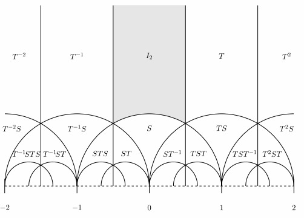

Modular Forms

I am self studying modular forms from the lecture notes authored by Dr P. Bruin and Dr S. Dahmen. I attempt to solve all problems without the aid of AI. I will upload a new PDF with my thoughts on the main text and solutions to the problems after each chapter.
Chapter 1: The modular group (09-09-2026)
Chapter 2: Will follow
The image above depicts the Dedekind tesselation: the action of the modular group on the upper half plane. The modular group is generated by the matrices T and S. The fundamental domain is shaded in grey.